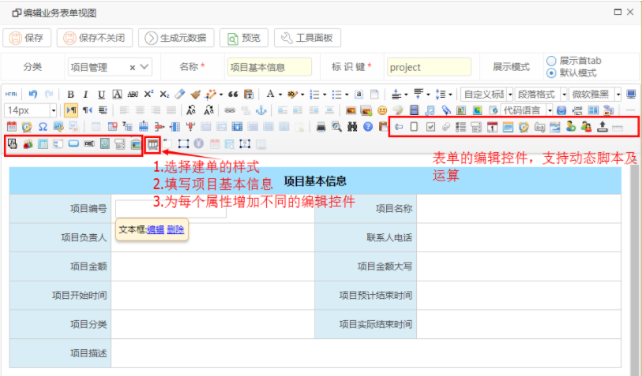
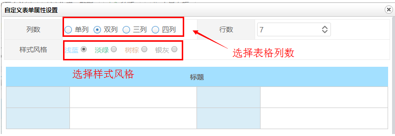
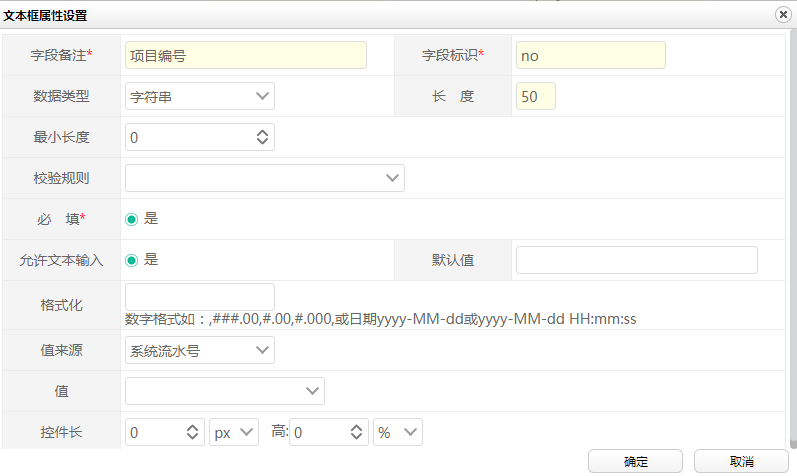
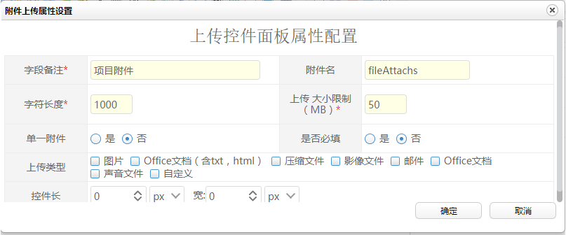
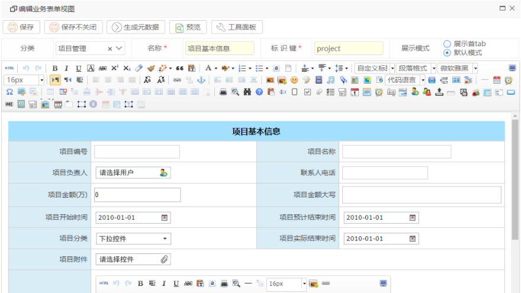
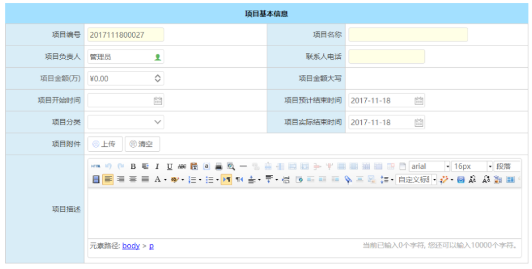
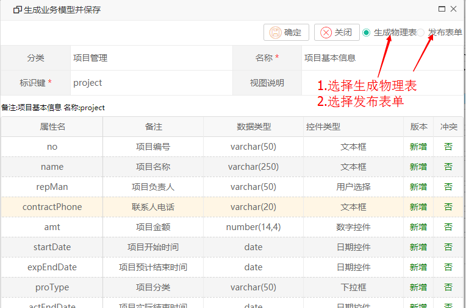

在系统中增加项目基本信息，基本信息包括有：
项目编号
项目名称
项目分类
项目启动时间
项目预计完成时间
项目合同金额
项目负责人
项目联系人
项目备注
第一步：进入主数据表单设计界面
操作进入业务表单设计中心，点击工具栏上的【新建】按钮，进入表单设计编辑界面。
第二步：设计项目信息表单的展示界面

第三步：在表单模板中选择建单模板样式，并设计项目的基本信息

在表单中的项目属性增加不同的控件：
如为项目的编号增加文本控件：

为项目的附件增加主数据展示附件

如第三步中显示的不同控件，其中平台支持非常丰富的数据展示及编辑控件：
【扩展说明】
支持的控件类型有：
文本控件
复选控件
复选列表控件
单选择列表控件
下拉列表控件
日期控件
月份控件
时间控件
编辑型按钮控件
按钮控件
自定义查级联查询控件
多行文本控件
富文件控件
Office控件
下拉树控件
自定义查询对话框控件
用户选择控件
部门选择控件
组织架构选择控件
子表控件
图片上传控件
附件上传控件
组框控件
日期相减控件
金额大小转换控件
子表数据统计控件
条件展示的div
隐藏域字段控件
审批意见控件
审批历史展示控件
第四步：为项目编写不同的属性及控件
如编写项目名称，项目分类等字段，不同的字段信息展示，使用不同的控件。编辑完成后，其界面如下所示：
 这时点击【保存】按钮完成表单信息的保存，也可以点击【预览】按钮展示已经完成的项目主数据的制作效果，如下图示。

用户可以点击【查看JSON】看到单据的数据结构，为了实现这个数据的有效查询与统计，我们需要把这些数据存至数据库中，这时我们需要生成以上单据对应的物理表结构。
【操作处理】
在表单的编辑界面中，我们点击【生成元数据】按钮，即平台就会展示这个单据对应映射的物理表结构，如下所示：

发布完成后，该表单已经完成保存，在表单管理列表中心则显示该表单列表，如下所示：
至此，我们完成了项目信息主数据制作。